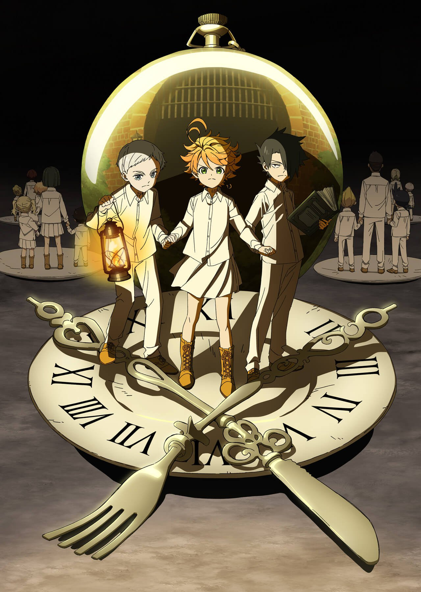

lensa animeme
follow for more anime content
by Dun
POSTER TERBARU ANIME YAKUSOKU NO NEVERLAND
Meski dalam wabah COVID-19, produksi film terbaru Hayao Mizaki, ‘Kimitachi wa dou Ikiru Ka’ tetap berlanjut dari kabaran sudah berjalan 36 menit, ditargetkan selesai 3 tahun mendatang